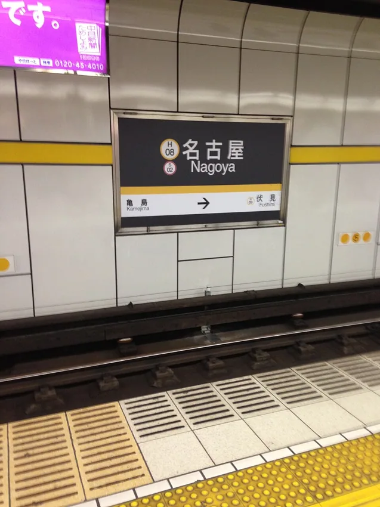
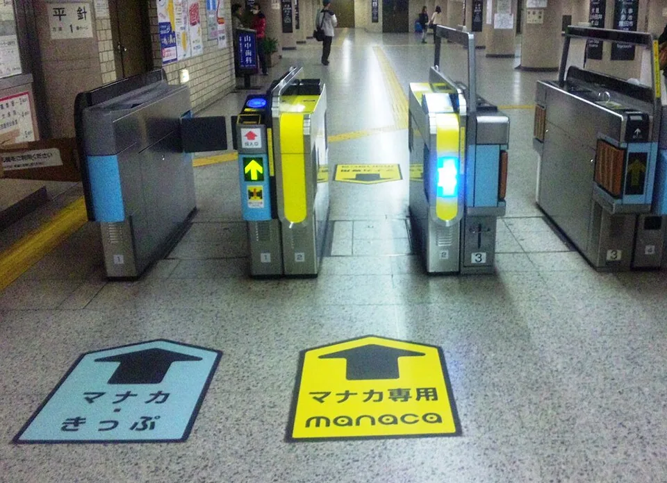
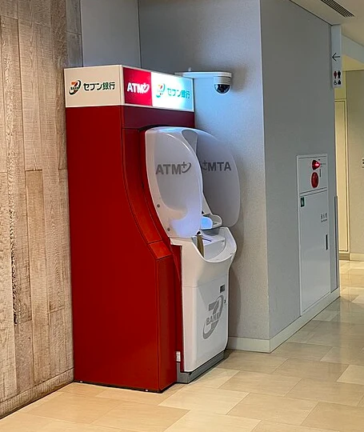

How to
Warm your hotel room
At APA Hotel Nagoya Ekimae and APA Hotel Kayabacho Hatchobori Ekimae, look for the air-conditioning controls on the bedside panel. Use the photos to match the labels. The layout may differ in your room. If your room has a key-card power slot by the door, insert your room key first.
- Switch the unit on. Look for ON/OFF or 運転／停止. If the display is already on, leave it on.
- Select heat if the panel offers a mode button. Press Mode or 運転切換 until the display shows 暖房 (heat). If there is a dedicated Heat button, press it once.
- Set the temperature above the current room temperature. Use the ▲ or + beside 設定温度. If the room is 19°C, try 22°C. Give it a few minutes to blow warm air, then adjust one degree at a time. Press ON/OFF when you’re finished.

Room controls: APA Nagoya, APA Kayabacho, Narita Tobu’s reply about heating.
Use the shower and warm the bathroom
For warmer water, start at the faucet. To warm the CR itself, look for a separate bathroom heater panel. The toilet may have its own seat-temperature setting.
Get warm shower water
- Point the showerhead into the tub or drain. On a temperature dial, start on the cool side of the 40°C mark. On a single mixer lever, start toward blue or C. If there are two taps, open cold first and add hot gradually.
- Choose the showerhead and start a gentle flow. Use the selector marked with a shower symbol or シャワー. If water comes out of the tub spout, switch the diverter to the shower position.
- Test the spray with your hand before stepping in. Move the temperature control a little toward red or H, wait for the water to settle, and test again. Leave any 40°C safety stop in place. If only hot or cold water comes out, turn it off and call reception.
- Turn the water off at the mixer. Return the flow control to OFF or 止 and check that the spray has stopped. With two separate taps, close hot first, then cold.

Warm the bathroom air
- Find the heater panel. Look near the bathroom door for 暖房 or 浴室暖房.
- Select heat with dry hands. Set a timer if offered and close the door while the room warms. If the panel offers a pre-bath mode (入浴前), use that before you get in.
- Press Stop when finished.
換気 runs the exhaust fan. If the only switches are the light and fan, ask the front desk whether that bathroom has a heater. A separate bathroom-air heater is unconfirmed for your three bookings.

Warm the toilet seat
Your two APA hotels list heated bidet seats.
- Find the seat control. Look on the toilet’s side panel or wall remote for 便座温度 (seat temperature), sometimes shortened to 便座.
- Choose a temperature. If adjustable, select 低 (low) and give the seat time to warm.
- Turn off seat heat. Choose 切 or OFF.
On this panel, 温水 sets the bidet spray’s water temperature. If you can’t find a seat setting, ask reception to show you the control for your model.

Equipment guides: APA bathroom fittings, TOTO bathroom heating, TOTO seat and spray settings (PDF).
How to ride the train
Your first subway ride is a simple one to practice. From APA Hotel Nagoya Ekimae, it’s two stops to Sakae, with no transfer. The line letter, station numbers and final destination are printed on station signs.
- H08 Nagoya
- H09 Fushimi
- H10 Sakae
-
Find the yellow H at Nagoya Station. Walk from the hotel to the Taiko-dori side of the station, then follow the public passage and signs for Subway / Higashiyama Line. Allow time to cross the station. If stairs are difficult, follow the elevator symbol or show staff your destination, Sakae (栄). Open the hotel-to-Sakae directions.

Nagoya · 名古屋. Look for this station name and the yellow line color. -
Choose one way to pay per person. You can use a loaded manaca, a supported contactless bank card or a paper ticket. For a ¥210 adult single ticket, choose English at the ticket machine, select the fare, pay in yen cash and take the ticket and change. See the machine and how to buy a manaca.

Choose English on the left to buy a paper ticket. -
Go through the gate. With manaca, tap the IC pad like you would a beep card. With a supported bank card, tap the bank-card reader at a marked gate. With a paper ticket, insert it in the gate and pick it up as you pass.

At Tsurumai Station, the yellow floor panel marks an IC-only lane. Look for the matching payment symbol at your gate. -
At Nagoya (H08), board toward Fujigaoka. Look for platform 1 and check the destination display. Queue by the door marks and leave the middle clear. When you hear an approach tune, stay behind the line. Let people off, then board once the doors are open. Hear the two Higashiyama tunes.

At Nagoya, check the overhead display and wait beside the door markings. -
Stay on at Fushimi (H09). Get off at Sakae (H10). Check the display above the door or listen for “Sakae.” For the East Gate, use elevator A at the east end of the Higashiyama platform. Tap out with the same card or device you used to enter. With a single ticket, insert it at the exit gate, which keeps it. If the gate stops you, show the attendant your card or ticket. Sakae platform and elevator guide.

Sakae · 栄. Get off here for the shopping district. - To get back to the hotel, reverse the direction. At Sakae take the yellow H from platform 2 toward Takabata. Pass Fushimi, get off at Nagoya and follow Taiko-dori Exit signs. For a paper fare, buy a new ticket for the return.
Use MariBank debit in Japan
For a shop purchase or yen from an ATM, bring your physical MariBank Philippines Mastercard and have enough pesos in your savings balance for the purchase or withdrawal plus any fee.
Pay at a shop
- Before you leave: Activate and unlock the card. In the MariBank app, go to Cards → Settings → Card Usage Control and check that overseas in-store payments and ATM withdrawals are allowed. Know your six-digit card PIN. If you have the combo card, select Debit Mode to spend from savings.
- Tap your MariBank debit card. Check the yen total and choose Card. A contactless payment can go through without a PIN. If the screen says Approved, you’re done. If it says Insert card, insert the chip. Enter your six-digit MariBank card PIN on the keypad only if prompted. Choose JPY if a currency choice appears.
- After payment: Take your card and receipt. Keep the JPY receipt and check the posted peso amount in the app. MariBank lists no added fee on overseas in-store purchases with the physical debit card. Overseas online merchant payments have a separate 2% fee, including purchases billed in PHP.
Prefer cash if a PIN is requested? Tell the cashier “Cash, please.” Wait for them to confirm the pending card payment is cancelled before handing over yen. This works the same way for MariBank debit and UnionBank credit.
MariBank card controls · Card PIN · In-store and online fees.
Withdraw yen from your peso balance
You can leave your money in PHP. In Japan, request the amount of yen you want to receive. The ATM dispenses yen and the peso equivalent comes out of MariBank savings. If you’re carrying Philippine banknotes instead, take them to a currency-exchange counter that accepts PHP.
- Insert your MariBank card at a Seven Bank ATM displaying Mastercard. Choose English → Withdrawal → Saving if it asks for the account. Seven Bank also shows a Skip option if you’re unsure. For MariBank, ATM cash comes from savings even if your combo card was in Credit Mode.
- Enter your six-digit card PIN, press Confirm, then select a yen amount, for example ¥10,000.
- If the screen offers a choice of billing currency, select Japanese yen (JPY) to decline the ATM’s peso conversion. Either choice dispenses yen. Review the amount and any ATM operator fee before confirming. You can cancel if you don’t accept the quote.
- Collect the yen, card and receipt. Check the savings transaction in the app. MariBank currently lists ₱0 for an international ATM withdrawal and ₱50 for an international ATM balance inquiry. A Japanese operator can charge its own withdrawal fee.

Example withdrawal: If the conversion were ₱0.40 per yen and the ATM displayed zero fee, withdrawing ¥10,000 would use about ₱4,000. The illustration uses a made-up rate. Your posted debit uses the applicable rate and any fee you accepted.
Seven Bank’s illustrated ATM steps · MariBank fee schedule · Combo card ATM rules.
Traveler reports. One Filipino traveler reported successful tap payments and yen withdrawals in Japan. A creator also reported a fee-free withdrawal at a Japanese 7-Eleven in a reel that contains a referral code. These were individual transactions. Check the fee on your own ATM screen. Reddit report · Public Facebook reel.
Pay with a Philippine credit card
With the UnionBank Rewards Secured Credit Card, your security deposit backs your credit limit. For example, the bank’s advertised 90% limit on a ₱20,000 deposit gives you ₱18,000 in credit. A shop purchase uses that available credit, and you still pay the monthly statement. UnionBank’s secured card · Secured-card terms.
- Before paying: Activate the physical card, check your available credit in UnionBank Online, and make sure international in-store purchases are enabled. Match the Visa or Mastercard logo on your card to the logo at the counter. Have your card PIN ready in case the reader asks. UnionBank card controls.
- Tap your UnionBank credit card. Check the yen total and choose Card. If the tap shows Approved, you’re done without a PIN. The reader can still ask you to insert the chip and enter your UnionBank credit card PIN on the keypad. If you prefer, switch to cash before approval. Choose one-time payment if offered installments and JPY if offered a currency choice. Save the receipt and check the posted PHP amount.
- At billing time: Pay the full statement balance by the due date to avoid purchase interest on a normally paid-in-full account. The pledged deposit stays with the bank as collateral. For yen cash, use the MariBank debit procedure above. Withdrawing against an eligible UnionBank credit line is a cash advance, with a ₱200 bank fee, possible ATM fees and interest from the withdrawal date. UnionBank cash advance terms.
Fee references checked November 22, 2026. UnionBank fee table · Foreign transaction FAQ. A traveler also described using a Rewards Visa Platinum in Japan. Their post leaves the secured status unspecified. Traveler’s Reddit report.
How to claim Japan’s shopping tax refund
For your November 24–28, 2026 trip, pay the full price and register the purchase at the shop. At Narita Terminal 2, complete Customs confirmation before giving Cebu Pacific your bags. The shop or its refund provider then handles the payout.
At the shop
- Bring your original passport. If Japan admits you as a non-resident with Temporary Visitor status, bring the passport with your landing permission sticker when shopping. If you use an automated entry gate, ask immigration for the stamp or sticker before leaving arrivals.
- Ask before paying. At a participating shop, say 免税はできますか？ (Menzei wa dekimasu ka?, “Do you offer tax-free shopping?”). You need at least ¥5,000 before tax at the same shop on the same day. Combine purchases across shops only if their shared tax-free counter says they qualify.
- Show your passport and register the sale. Use the tax-free register or the shop’s service counter. Pay the tax-inclusive price and keep the receipt and refund slip. Follow the shop’s instructions to register a payout method. For example, UNIQLO gives you a QR code for J-TaxRefund, where you verify your passport and choose how to receive the money. UNIQLO’s illustrated instructions.
What could you get back? Suppose your UNIQLO clothes cost ¥5,000 before tax. At 10%, you pay ¥5,500. The tax is ¥500. UNIQLO lists a fee of about 10% of that tax, so the estimated refund is about ¥450. Other shops may charge different fees.
Keep everything on a refund receipt together. Buy gummies you’ll eat in Japan on a separate, ordinary receipt. Customs checks each transaction as a whole. Even one missing item can cost the refund on that entire receipt. If you used any of the tax-free food, drinks or cosmetics, tell a customs officer at the counter before using the kiosk. Japan Tourism Agency’s traveler FAQ.
Before bag drop at Narita T2
- Go to Customs Tax Refund with your bags. For your 19:00 flight on November 28, leave time for inspection and airline bag drop. Keep your passport, receipts and all the goods accessible, including purchases you plan to check. Customs confirmation must happen within 90 days of purchase.
- Scan your passport at the kiosk. You can also use Visit Japan Web in the departure lobby on the dedicated Customs_WiFi_For_TaxRefund network. The kiosk works without a phone. Japan Customs’ Wi-Fi details.
- Read the result before handing over your suitcase. Green means Customs confirmation is complete. Red means take your passport and goods to the inspection area and finish with the officer. Then continue to bag drop and security.

Receive the refund
Card, bank or app: follow the provider’s instructions on your refund slip. Timing varies by shop. If the money hasn’t arrived by the provider’s stated date, contact the shop or provider with your receipt. Cash: if the shop offers yen cash at Narita, use the payout kiosk that supports its provider. T2 has cash kiosks both before and after security, with different operators. Check the operator before passing security. Narita cash kiosks and supported providers.
Rules checked November 23, 2026. Japan introduced this refund method on November 1, 2026. Japan Tourism Agency’s tax-free shopping guide · Japan Customs departure procedure · Your airport transfer and flight.
Photo credits and licenses
- Subway Nagoya-STA Higashiyama-Line Platform1 by MaedaAkihiko. Resized and converted to WebP. CC0.
- Nagoya Station Sign (Higashiyama Line) by そらみみ. Resized and converted to WebP. CC BY-SA 3.0.
- Sakae Station Sign (Higashiyama Line) by そらみみ. Resized and converted to WebP. CC BY-SA 3.0.
- Ticketgates by アレックス. Resized and converted to WebP. CC BY-SA 3.0.
- Nagoya ticket machine by 円周率３パーセント. Cropped and resized. CC BY-SA 4.0.
- Seven Bank ATM at Toyosu Front, Tokyo by Nori Norisa, 2025. Cropped and converted to WebP. CC BY 4.0.
- Room heater remote by Nesnad. Cropped and converted to WebP. CC BY 4.0.
- Thermostatic shower mixer by M.Minderhoud at Dutch Wikipedia. Resized and converted to WebP. CC BY-SA 3.0.
- MAX bathroom heater panel by RuinDig/Yuki Uchida. Cropped and converted to WebP. CC BY 4.0.
- TOTO toilet-seat control panel by Benlisquare. Cropped and converted to WebP. CC BY-SA 4.0.

.jpg){kind=link}
.jpg){kind=link}


The hotel-control photos include a highlight over the relevant button or dial. The adapted photos retain their respective licenses.